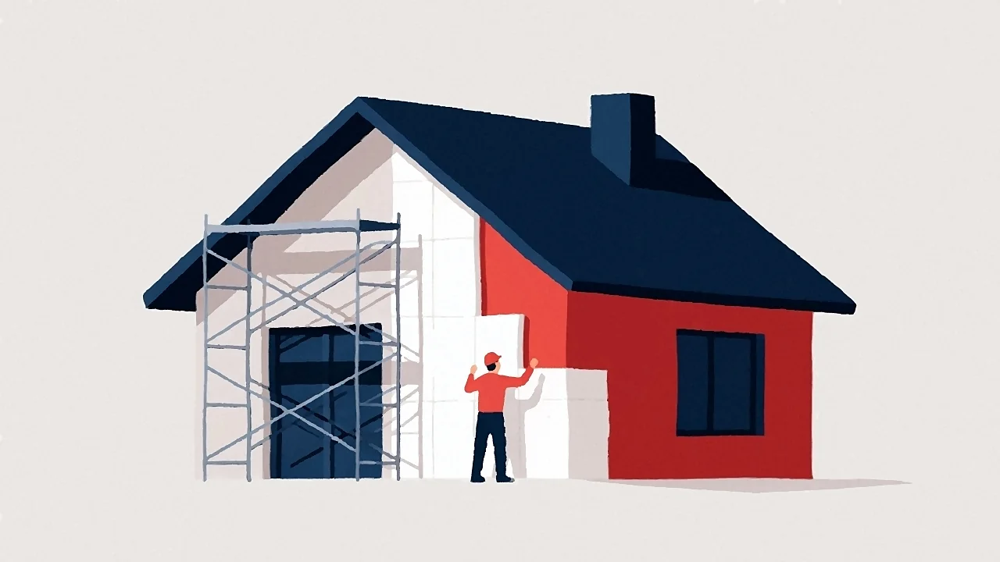

Ocieplenie domu to jedna z najbardziej opłacalnych inwestycji w budynek – potrafi obniżyć rachunki za ogrzewanie nawet o 30–40%. Zanim jednak podejmiesz decyzję, warto wiedzieć, ile realnie kosztuje ocieplenie domu w 2026 roku i od czego zależy końcowa cena.
Od czego zależy cena ocieplenia domu
Nie ma jednej ceny ocieplenia, bo każdy budynek jest inny. Na koszt wpływa przede wszystkim:
- Metoda i materiał – styropian (metoda BSO) jest najtańszy, wełna mineralna droższa, a pianka PUR wyceniana jest indywidualnie.
- Grubość izolacji – standardem jest dziś 15–20 cm; grubsza warstwa to wyższy koszt materiału, ale niższe rachunki.
- Stan i rodzaj ścian – nierówne, zawilgocone lub spękane ściany wymagają przygotowania, co zwiększa robociznę.
- Rodzaj tynku – tynk silikonowy jest trwalszy i droższy od mineralnego czy akrylowego.
- Wysokość i kształt budynku – więcej kondygnacji, balkony, wykusze i detale to więcej pracy na m².
Cennik ocieplenia domu za m² w 2026
Poniższe ceny są orientacyjne i dotyczą kompletnej usługi (materiał + robocizna + tynk) w przeliczeniu na m² powierzchni elewacji. Realny koszt ustalamy zawsze po pomiarze budynku.
| Metoda ocieplenia | Cena orientacyjna za m² | Kiedy najlepsza |
|---|---|---|
| Styropian (BSO) | 150–280 zł | Domy jednorodzinne, najlepszy stosunek ceny do efektu |
| Wełna mineralna | 190–330 zł | Lepsza akustyka i odporność ogniowa |
| Pianka PUR | wycena indywidualna | Poddasza, stropodachy, miejsca o trudnym kształcie |
Przykład: ile kosztuje ocieplenie domu 120 m²
Dom jednorodzinny o powierzchni użytkowej ok. 120 m² ma zwykle 180–200 m² powierzchni elewacji do ocieplenia (ściany są większe niż podłogi). Przyjmując ocieplenie styropianem:
- 200 m² × 180 zł/m² = ok. 36 000 zł (wariant ekonomiczny)
- 200 m² × 260 zł/m² = ok. 52 000 zł (styropian grafitowy + tynk silikonowy)
To koszt, który zwraca się przez lata w postaci niższych rachunków, a przy skorzystaniu z dotacji realny wydatek może być jeszcze niższy.
Chcesz dokładny kosztorys dla swojego domu?
Przyjedziemy, zmierzymy budynek i wycenimy ocieplenie bezpłatnie – bez zobowiązań.
Zamów bezpłatną wycenę →Co dokładnie wchodzi w cenę ocieplenia
Rzetelna wycena obejmuje pełen zakres prac, a nie tylko sam materiał. W MarBud w cenie za m² zawarte są:
- przygotowanie i gruntowanie ściany,
- klejenie i mechaniczne kołkowanie płyt izolacji,
- warstwa zbrojąca z siatką z włókna szklanego,
- gruntowanie pod tynk i tynk elewacyjny,
- rusztowanie – pracujemy na własnym (800 m²), więc nie doliczamy jego wynajmu.
Dzięki materiałom kupowanym w cenach hurtowych i własnemu sprzętowi końcowa cena jest niższa, niż gdy każdą pozycję zleca się osobno.
Jak obniżyć koszt ocieplenia domu
Najskuteczniejszy sposób to dotacje. Program „Czyste Powietrze" i ulga termomodernizacyjna potrafią zwrócić znaczną część inwestycji – szczegóły opisaliśmy w osobnym poradniku: dotacje na ocieplenie domu w 2026. Warto też zaplanować prace poza szczytem sezonu i połączyć ocieplenie ścian z ociepleniem poddasza, bo ekipa jest już na miejscu.